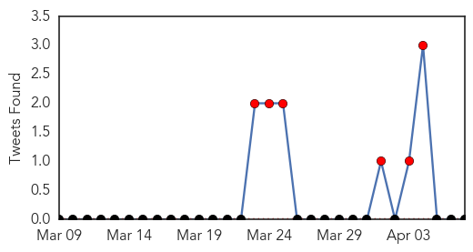
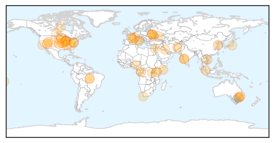
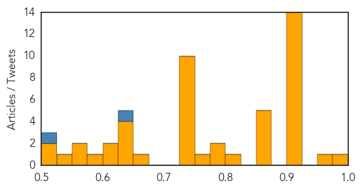

Ebola
30-Day Web Trend
18 alerts, 0 warnings

30-Day Twitter Trend
11 alerts, 0 warnings

Article Locations

Article Confidences

Top Articles:
- 1.000
- Scale of Guinea's Ebola epidemic unprecedented -aid agency
- 1.000
- Deadly Ebola virus spreads
- 1.000
- Ebola virus disease, West Africa – update
- 1.000
- Rare case of Lassa fever discovered in Minnesota traveler, CDC says
- 1.000
- Death Toll In Guinea Ebola Outbreak Mounts To 86
- 1.000
- the edge of knowledge
- 1.000
- No Ebola case in Ghana; beware measures will help
- 1.000
- As Ebola spreads in Africa, how worried should West be?
- 1.000
- West Africa mobilises against Ebola epidemic
- 1.000
- Africa battles to keep lid on killer diseases
- 1.000
- West Africa gears up to fight Ebola, killer fevers
- 1.000
- Ebola-hit Guinea calls for calm after attack on aid group
- 0.999
- Mob attacks ebola treatment centre in Guinea
- 0.999
- Mali reports three suspected cases of Ebola
- 0.999
- Mob attacks Ebola treatment centre in Guinea, suspected cases reach Mali
- 0.999
- Mali suspects first Ebola cases as regional death toll tops 90
- 0.999
- No warning on Ebola from Health Ministry – Health director – BorneoPost Online
- 0.999
- Successes, Challenges in Response to Guinea Ebola Epidemic
- 0.999
- Crowd attacks Ebola treatment center Republican American
- 0.999
- Headlines, News, The Philippine Star
- 0.999
- Ebola spread to Guinea capital raises fears
- 0.999
- Guinea: Successes and challenges in response to Ebola outbreak
- 0.999
- Guinea: An MSF epidemiologist explains the dangerous nature of Ebola
- 0.999
- Guinea, Liberia investigate more Ebola cases
- 0.999
- Samaritan's Purse Partners with Liberian Government to Stop Spread of Ebola Virus
- 0.999
- Guinea Ebola patients discharged
- 0.998
- The African Ebola outbreak that keeps getting worse
- 0.998
- First Ebola cases suspected in Mali; regional death toll tops 90
- 0.998
- Ghana Ebola scare: Teenager’s fatal virus tests negative for disease
- 0.998
- Deadly Virus Spreads in Africa to Mali and Ghana
- 0.998
- Successes and challenges in response to Guinea Ebola epidemic - Guinea
- 0.998
- As the deadly Ebola virus disease continues to spread, Red Cross scales up its response - Guinea
- 0.997
- Untitled Article
- 0.997
- Kenya : Mob attacks Ebola treatment centre in Guinea, suspected cases reach Mali
- 0.997
- How to Contain an Epidemic
- 0.996
- Rare West African virus confirmed in Minnesota traveler, search on for others exposed
- 0.996
- UNICEF-Liberia Ebola Outbreak: SitRep #11, 7 April 2014 - Liberia
- 0.995
- Suspected Case Of Ebola Disease Tests Negative
- 0.995
- FG Says Ebola Disease Won’t Enter Nigeria
- 0.994
- Guinea raises Ebola death toll to 95
- 0.994
- Ghana, Business Advice, Jobs, News, Business Directory, Real Estate, Finance, Forms, Auto
- 0.990
- Crowd attacks Ebola treatment center in Guinea
- 0.990
- NEWS.am Medicine - All about health and medicine
- 0.990
- UPDATE 1-Ghana testing blood samples of suspected Ebola case -official
- 0.985
- Ebola Virus: Media Should Not Create Panic
- 0.984
- Sierra Leone: Ebola virus disease preparedness Emergency Plan of Action (EPoA) DREF Operation n° MDRSL005 - Sierra Leone
- 0.984
- UPDATE 1-Fatal virus in Ghana tests negative for Ebola
- 0.975
- Mali eyes suspected cases of Ebola fever
- 0.974
- Ebola Virus Brings Mining to a Halt in West Africa -- The Motley Fool
- 0.968
- Ghana reports first suspected Ebola case
Showing top 50 articles...
Top Tweets:
- 0.742
- RT: Outbreak: @PittHealthSci infectious diseases expert Amesh Adalja, MD, shares Ebola facts http://t.co…
Unknown
30-Day Web Trend
0 alerts, 0 warnings
30-Day Twitter Trend
1 alerts, 0 warnings
Article Locations
Article Confidences
Top Articles:
- 0.986
- Rare Lassa Fever Case Found in US
- 0.972
- Survey identifies 4 new leprosy cases in Kolhapur, 3 in advanced stage
- 0.917
- Chicago Tribune
- 0.917
- Chicago Tribune
- 0.917
- Chicago Tribune
- 0.917
- Chicago Tribune
- 0.917
- Chicago Tribune
- 0.917
- Chicago Tribune
- 0.917
- Chicago Tribune
- 0.917
- Chicago Tribune
- 0.917
- Chicago Tribune
- 0.917
- Chicago Tribune
- 0.917
- Chicago Tribune
- 0.917
- Chicago Tribune
- 0.910
- The world windows to Thailand
- 0.910
- The world windows to Thailand
- 0.866
- Russia says Ukraine must stop pointing finger at Moscow
- 0.866
- NATO-No significant change in Russian troop positions near Ukraine
- 0.866
- Sub-Saharan Africa GDP seen rising to 5.2 pct in 2014
- 0.861
- Salt Lake City News, Sports, Archive
- 0.861
- Salt Lake City News, Sports, Archive
- 0.810
- China, Japan nervous as PEDv cases climb
- 0.796
- The Rocky Mount Telegram
- 0.775
- HA passenger with pink eye symptoms denied boarding
- 0.763
- Gene mapping used by US scientists to combat food poisoning
- 0.728
- Kuwait gives $250m to aid Syrian relief
- 0.728
- Russian soldier kills Ukrainian naval officer in Crimea
- 0.728
- ‘I’m not going anywhere,’ Russian ex-PM quotes Assad as saying
- 0.728
- Rwandan president blames France at genocide commemorations
- 0.728
- Pro-Russian separatists declare 'independence' for Donetsk
- 0.728
- World oil prices down on Libyan ports agreement
- 0.728
- New possible signals detected from missing plane
- 0.728
- VIDEO: Indian voters call for change
- 0.728
- French organic winemaker fined for refusing to use pesticides
- 0.728
- French, British UN workers shot dead in Somalia
- 0.671
- Infectious XDR-TB patients being sent home - Western Cape
- 0.643
- Bangkok Post
- 0.643
- Bangkok Post
- 0.639
- Bitten by wolf, Satara woman dies of rabies
- 0.626
- UAE Ministry of Education celebrates World Health Day in collaboration with Dettol's 'Mission for Health'
- 0.602
- HSC doctor receives $2 million grant for research on pandemic disease
- 0.600
- Public Health: Start Here is theme for 2014 National Public Health Week
- 0.582
- NMA seeks public enlightenment
- 0.560
- State public health officials issue warning after toxin found in sport-harvested shellfish from Monterey Bay
- 0.555
- Operation Walk Denver Makes Inaugural Trip to Honduras to Perform Free, Life-Changing Procedures on Patients in Need
- 0.535
- Milwaukee Community Journal WISCONSIN'S LARGEST AFRICAN AMERICAN NEWSPAPERCity of Milwaukee Health Department Marks National Public Health Week 2014
- 0.512
- Novant Health Facilities Recognized for Nursing Excellence
- 0.509
- What's ailing Brandon?
Top Tweets:
- 0.652
- Más de 3.000 jóvenes para cubrir 23 vacancias en Itaipú: Un total de 3.149 bachilleres de todo el país se po... http://t.co/lBDjexH0Xf
- 0.648
- Our survey shows that 95 percent of Aussies aged 35-49 have experienced flu-like symptoms, yet more than half have never had a flu vaccine.
- 0.601
- shiraz en la rica noche de hoy, aunque mañana trabajo tengo que cerrar la noche como se debe' ❤️
- 0.532
- Paraguay empeoró en facilitación de comercio: El informe de Facilitación de Comercio Global del Foro Económ... http://t.co/vce1vlUvbP
- 0.527
- It’s National Public Health Week! Take steps to fight the flu all yr: http://t.co/W5nsJADhQZ NPHW